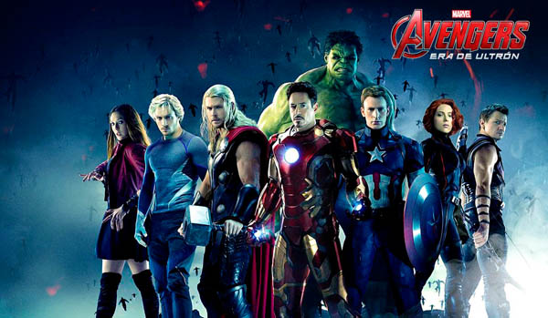
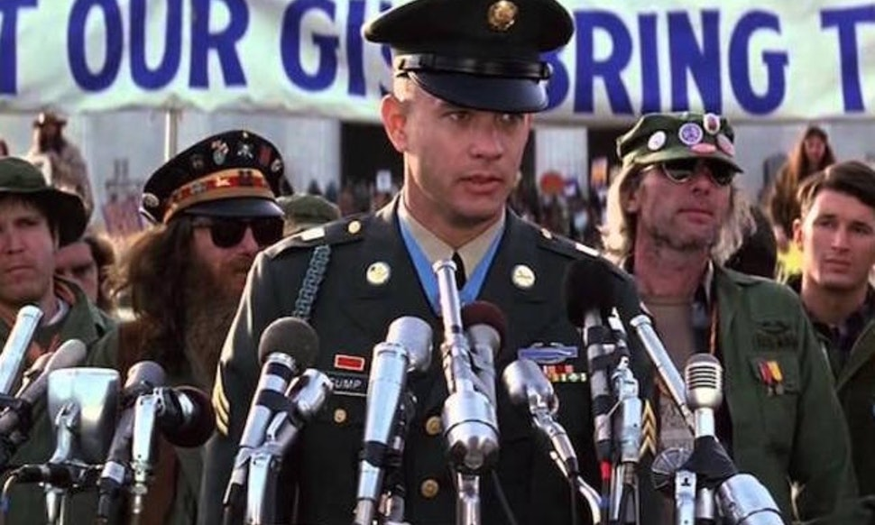
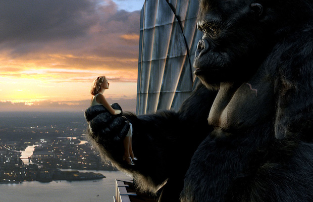

Genre: Comedy,Adventure,Fantasy
Released: April 11, 2012
The Avengers premiered on April 11, 2012, at Hollywood's El Capitan Theatre and was released in the United States on May 4, 2012. The film received positive reviews from critics, as well as numerous awards and nominations including Academy Award and BAFTA nominations for achievements in visual effects. It set or tied numerous box office records, including the biggest opening weekend in the United States and Canada. The Avengers grossed over $1.5 billion worldwide and became the third-highest-grossing film of all time, as well as the highest-grossing film of 2012. It is the first Marvel production to generate $1 billion in ticket sales
Genre: Drama, Romance film
Released: July 6, 1994
Forrest Gump received favorable reviews for Zemeckis' directing, Hanks' performance, visual effects, and script. The film was a massive success at the box office; it became the top-grossing film in North America released that year and earned over US$677 million worldwide during its theatrical run, making it the second highest-grossing film of 1994. The soundtrack sold over 12 million copies. Forrest Gump won the Academy Awards for Best Picture, Best Director, Best Actor for Hanks, Best Adapted Screenplay, Best Visual Effects, and Best Film Editing. It won many other awards and nominations, including Golden Globes, People's Choice Awards, and Young Artist Awards
Genre: Action,Adventure,Fantasy
Released: December 13, 2005
Filming for King Kong took place in New Zealand from September 2004 to March 2005. The project's budget climbed from an initial $150 million to a then-record-breaking $207 million. It was released on December 14, 2005 in Germany and on December 16 in the United States, and made an opening of $50.1 million. While it performed lower than expected, King Kong made domestic and worldwide grosses that eventually added up to $550 million,[2] becoming the fourth-highest-grossing film in Universal Pictures history at the time and the fifth-highest-grossing film of 2005. It also generated $100 million in DVD sales upon its home video release.[4] The film garnered positive reviews from critics and appeared on several top ten lists for 2005. It was praised for its special effects, performances, sense of spectacle and comparison to the 1933 original
Genre: Horror, Thriller
Release: October 23, 2012
A group of college students, on a trip to the Mountain Man Festival on Halloween in West Virginia, encounter a clan of cannibals.After The Hillicker Brothers (Three Finger, Saw Tooth and One Eye) escape from the Glensville Sanatorium, now along with the help of serial killer Maynard Odets (later called the "Old Man" from the first two films) start a murderous rampage near the city of Fairlake, Greenbrier County, West Virginia, where they first murder news reporter Kaleen Webber.
Genre: Drama
Release:
A Dog's Tale premiered at the Seattle International Film Festival on June 13, 2009, and its first theatrical release was in Japan on August 8. Sony Pictures Entertainment decided to forgo a U.S. theatrical release. The film was given a UK theatrical release on March 12, 2010, courtesy of Entertainment Film Distributors, and opened in over 25 countries throughout 2009 and 2010. The film's foreign box office returns total $46.7 million as of January 2011.